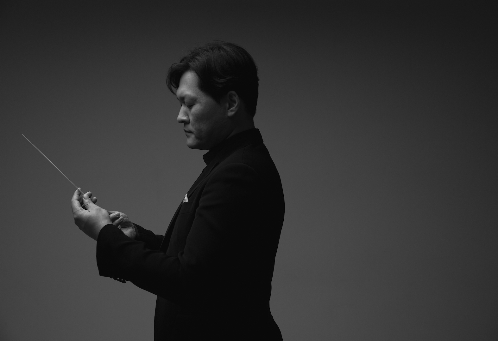

지휘자 박대명
덕원예술고등학교 바이올린 전공
독일 카셀 시립 음악원 합창, 오케스트라 지휘 전문연주자 과정 최고 점수 졸업(Hans Dieter Uhlenbruck 사사)
독일 뷔르츠부르크 국립음대 오케스트라 지휘 Diplom 졸업
- Prof. Hans Rainer Forster (오페라, 심포니 지휘 사사)
독일 뷔르츠부르크 국립음대 오케스트라 지휘 Master 졸업
- Prof. Yuuko Amanuma (오페라 반주 및 지휘)
- Prof. Ari Rasilainen (심포니 지휘) 사사
프랑크푸르트 오페라 극장(Oper Frankfurt) 합창 부지휘자 겸 어린이 합창 지휘자 역임
2014 에스토니아 국제 지휘아카데미에서 마에스트로
Neeme Jarvi, Paavo Jarvi, Leonid Grin 사사
핀란드 Jyvaskyla Sinfonia, St.Michel chamber orchestra, Saimaa Sinfonietta, 네절란드 Amsterdam VU
Orchestra, Philips Wind Ensemble, 에스토니아 Parnu music festival Youch Ensemble 등 다수의 유럽오케스트라 지휘
덕원예술고등학교 오케스트라 지휘자 역임
현)
가천대학교 예술체육대학 음악학부 출강
Cantus Firmus Ensemble 대표/음악감독, 율 챔버오케스트라 지휘, 가천대학교 의과대학 오케스트라CONCORDIA 지휘, 경희대학교 MDOP, 한국외국어대학교
HUFSPHIL, 대학아마추어오케스트라 연합 AOU 지휘